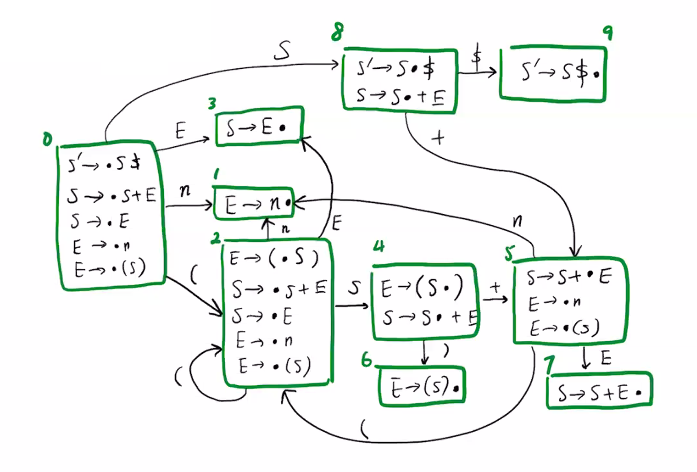
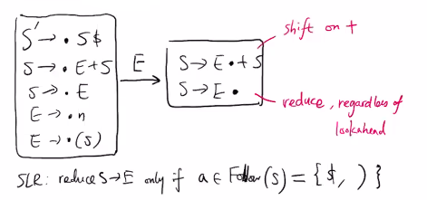
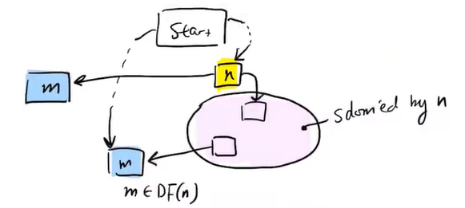

(0|1)*1 to DFA.
instructor: Yizhou Zhang
E21736 TTh 10-12:00
https://student.cs.uwaterloo.ca/~cs444/
https://student.cs.uwaterloo.ca/~cs444/joos/features/
https://uwaterloo.zoom.us/j/99282696444?pwd=R1FCWEgraTJsYWZXVWFlS0NKZ29zUT09
assn * 6 (63%) + secret test (10%) + fe (25%)
big picture:
bigger picture: compiler => assembler => linker => loader
if (b == c) /* ... */ a += "hi";
^ ^^ ^ ^^ ^ ^ ^ ^ ^
tokens: integer literal, string literals, keywords, operators, comment
given input string, we ignore comments, whitespaces (javadoc comments are exception).
the token class includes token type + attribute + metadata (eg source location)
eg. naive scanning identifier
while true:
auto c = input.read()
if !idChar(c):
break
id.append(c)
challenges: no backtracking (cannot handle overlapping tokens), no lookaheads
improved:
while idChar(input.peek()):
id.append(input.read())
one can use regular expressions to define legal tokens to synthesize such lexer code.
| R | L(R) | meaning |
|---|---|---|
| a | {"a"} | |
| ϵ | {""} | |
| R|S | L(R) ∪ L(S) | alternation |
| R⋅S | {rs: r∈L(R), s∈L(S)} | concatenation |
| R* | L(ϵ) ∪ L(R) ∪ L(RR) ∪ ... | kleene star |
extensions
| R | L(R) |
|---|---|
| R? | R|ϵ |
| R+ | R(R*) |
| [abc]=[a-c] | a|b|c |
| [^ab] | any char not a or b |
| . | [^\n] |
| [^] | any char |
lex generators: lex/flex/jflex/...
digit = [0-9]posint = [1-9]{digit}*id = [a-z]{id}*|[a-z] (note: not an RE)language matching token rule: always match the longest token.
eg. how would java tokenize elsex = 0 ? most languages will treat elesx as an identifier.
eg. how would java tokenize x = +++y ?
"x" "=" "++" "+" "y", and we have errors.++, so output erroreg. how would java tokenize a++b ?
"a" "++" "a" and faills parsing"a" "+" "+" "a" and passes parsing"a" "++" "a" and rejecteg. how would java tokenize List<List<Integer>> ?
>> as one token and failhow does lexer generator work? given spec
spec = re1 {act}
| re2 {act}
| ...
// in decreasing order
it does spec => NFA => DFA => loop + table.
defn. a DFA consist of:
auto q = q0
while i <= len(input):
q = delta(q, input[i]):
++i
if q in F:
...
strawman idea: directly map RE to DFA. but things like R1="IF",R2="IDENT" do not not work in general. we need to convert to NFA first.
defn. an NFA is a DFA plus
algo. (RE to NFA method) suppose denotes a DFA for a regular expression with one enter and one exit state. we use base cases:
a
[[a]] = -> ◯ ---> ◎
ϵ
[[ϵ]] = -> ◯ ---> ◎
and induction cases
ϵ
[[R1⋅R2]] = -> [[R1]] ---> [[R2]] (change R1's final state to non-final)
[[R1]]
ϵ / \ ϵ
[[R1|R2]] = -> ◯ ◎ (change R1,R2's final state to non-final)
ϵ \ / ϵ
[[R2]]
ϵ ϵ
-> ◯ ---> [[R]] ---> ◎
| ^ | ^
[[R*]] = | | | ϵ | (change R's final state to non-final)
| +-+ |
+-----------------+
ϵ
eg. convert (0|1)*1 to NFA.
NFA-DFA idea: a DFA state = set of all NFA states that can be reached by reaching same sequence of symbols.
defn. the ϵ-closure of q is the set of states reachable from q using >= 0 ϵ-edges.
eg. ϵ-closure(G) = {G, H}, ϵ-closure(F) = {F, G, H, A, B, D}, ϵ-closure({G, F}) = ϵ-closure(G) ∪ ϵ-closure(F).
algo. (computing ϵ-closure)
equations:
ϵ-closure[q][q] = trueϵ-closure[q][q'] = ϵ-closure[q][q'']compute(q):
for all states q' in NFA:
ϵ-closure[q][q'] = false
worklist = {q}
// invariant: q' equation is not satisfied => q ∈ worklist'
while worklist:
auto q' = worklist.pop()
update ϵ-closure[q][q'] per its equation
if ϵ-closure[q][q'] changed:
for every q' such that q'' -> q' via ϵ:
add q'' to worklist
correctness:
ϵ-closure[q][q'] can only change from 0 to 1, and there are finite number of themcomplexity: O(N), where N is number of NFA states.
algo. (construct DFA from NFA)
eg. convert (0|1)*1 to DFA.
this DFA is not minimal, we can minimize it. we want to ask when two DFA states are equivalent.
defn. two DFA states are not equivalent when
use worklist algo, we start with every pair of states being equivalent, and unequate them.
theorem. (myhill-nerode) for any DFA, there exists a unique minimal DFA accepting some input.
the states SABDGH and CFABDGH are equivalent, so they can be merged.
eg. suppose we have a spec
spec = R1 {act 1}
| R2 {act 2}
and we generate an NFA and a DFA
◯ ... ◎ A
/
◯ -----> ◯ -> ... ◎ AB
\
◯ ... ◎ B
the final state contains both A and B. what action should lexer do? it should do action A because of decreasing priority.
finally, the generated code should do
eg. suppose R1=abc, R2=(abc)*d. what does abcabc...abcx match?
lexer will reach x and fail, then it backs up to beginning and match R1. then it starts from the second abc and reach x again, ... the time complexity is O(N^2).
minimization algo of DFA exists to reduce complexity to O(N).
start from regular expression RE0, receive input , then we transit to regular expression RE1 and so on..
defn. the derivative of regular expression wrt , is
we use context-free-grammar (rewrite does not depend on context)
eg.
start symbol: S
terminals: + * n ( )
nonterminals: S, E
productions:
S -> S + S | S * S | E
E -> n | ( S )
defn. a derivation is sequence of rewrites from start symbol to a token stream.
notation.
eg. how to derive (1+4)+2 ?
S
S + S
E + S // leftmost derivation:
( S ) + S // expand leftmost terminal first
( S + S ) + S
( E + E ) + E
( 1 + 4 ) + 2
S
S + S
S + E
S + 2 // rightmost derivation
...
its parse tree is

leftmost derivation corresponds to top-down parsing; rightmost derivation corresponds to bottom-up parsing.
defn. G is ambiguous if some string in L(G) has multiple parse trees.
eg. 1+2*3 has two parse trees, so the grammar above is ambiguous. the precedence of + and * is not enforced.
eg. 1+2+3 has two parse trees. the associativity of + is not enforced.
fixing ambiguity:
S -> S + T | T
T -> T * F | F
F -> n | ( S )
// precedence left +
// precedence left *
this defines the same language but unambiguous because
+ under *+ under RHS of +many parser generators allow specifying precedence and associativity.
eg. dangling else problem
S -> if E then S
| if E then S else S
| ...
how do we parse if E1 then if E2 then S1 else S2 ? we can let the else belong to the inner if, or let it belong to the outer if. most languages choose the first parse (the "closest-if rule").
if E1 then
if E2 then S1
else S2
this grammar is ambiguous. to fix it, we observe there are two kinds of statements
then => should not be followed by elsewe can fix using
S -> M | U
M -> if E then M else M
| ...
U -> if E then S
| if E then M else U
// precedence noassoc if
// precedence noassoc else
eg. needing context: how to parse HashTable<K, V> x; ? there are 2 solutions
eg. significant whitespace (python): lexer inserts extra indent/dedent tokens.
aka top-down parsing / recursive-descent parsing
eg. given S-expression (scheme)
S -> ( L ) | x
L -> ϵ | S L
we parse like this
class SExpr {}
class ListExpr extends SExpr {}
class Id extends SExpr {}
SExpr parseS() {
switch (peek()) {
case LPAREN: // S -> (L)
consume(); // LPAREN
List<SExpr> l = parseL();
consume(); // RPAREN
return new ListExpr(l);
case IDENT: // S -> x
String id = consume(); // IDENT
return new Id(id);
default:
throw SyntaxError;
}
}
List<SExpr> parseL() {
switch (peek()) {
case ID: case LPAREN: // S -> S L
SExpr S = parseS();
List<SExpr> l = parseL();
return new List<>(s, new ListExpr(l));
case LPAREN: // L ->
return new List<>();
default:
throw SyntaxError;
}
}
if we parse "(x x)" we get
ListExpr
|
List<SExpr>
/ \
/ \
Id("x") Id("x")
predictive parsing table (PPT) for one lookahead:
| ( | x | ) | |
|---|---|---|---|
| S | S → (L) | S → x | None |
| L | L → SL | L → SL | L → ϵ |
defn. a grammar is LL(1) if a 1-lookahead PPT can be constructed.
LL(k>=2) grammars are not generally used. if represents vocabulary, then there are columns in a PPT.
to build prediction table, we build 3 tables
Nullable(X): true iff X can derive ϵFirst(X): set of tokens that can start XFollow(X): set of tokens that can follow Xeg. for the S-expr grammar, we get
Nullable(S) = 0
Nullable(L) = 1
First(L) = (, x
Follow(L) = )
we will build a table such that Cell(x, a) in PPT contains
X → γ where a ∈ First(γ).X → γ where Nullable(γ) = 1 and a ∈ Follow(X)claim. (proving string is nullable)
ϵ is nullable;X → γ ∈ G and γ is nullable, then X is nullable;X is nullable and β is nullable, then Xβ is nullable.algo. (computing nullable using iterative solving)
equations:
Nullable[x] = Nullable[γ]Nullable[γ] =
γ = ϵγ = βNullable[x] ∧ Nullable[β] if γ = Xβfor each nonterminal X:
nullable[X] = 0
repeat until no more changes:
for each X in G:
update nullable[X] per X equation
return nullable
correctness:
algo. (computing nullable using worklist)
for each nonterminal X:
nullable[X] = 0
auto worklist = {X: X → ϵ ∈ G}
// invariant: if X's equation is not satisfied, then X is in work list
while worklist is not empty:
auto X = worklist.pop()
update nullable[X] per X equation
if nullable[X] changed:
for each Z → αXβ ∈ G:
worklist.add(Z)
return nullable
claim. (proving string is in first set)
a ∈ First(aβ) for all βX → γ ∈ G and a ∈ First(γ), then a ∈ First(X)a ∈ First(X), then a ∈ First(Xβ)Nullable(X) and a ∈ First(β), then a ∈ First(Xβ)equations:
First(X) = First(γ)First(γ) =
γ = ϵ{a} if γ = aβFirst(X) if γ = Xβ and X is not nullableFirst(X) ∪ First(β) if γ = Xβ and X is nullablewe can similarly provide two algos to compute first.
claim. (proving string is in follow set)
Y → aXβ ∈ G and a ∈ First(β), then a ∈ Follow(X)Y → aXβ ∈ G and Nullable(β) = 1 and a ∈ Follow(Y), then a ∈ Follow(X)equation: Follow(X) = (First(β) ∪ (if Nullable(β) then Follow(Y) else ∅))
eg. failing cases: Cell(X,a) has >= productions.
we can use LL(2+), but it causes state explosion. we can use following tricks:
(1) shared first set:
L -> S | S L // not LL(1)
fix:
L -> S L'
L' -> ϵ | L
(2) left recursion
L -> S | L + S // not LL(k) since First(L+S) = First(S)
fix:
L -> S(+S)* // parse (+S)* using a loop
Expr parseL() {
Expr result = parseS();
while (peek()) {
consume(); // '+'
result = new Plus(result, parseS());
}
return result;
}
problem with top-down parsing: must predict production before seeing entire input going into the production. this is not required for button-up parsing.
earley parser: chooses productions as late as it can
straw man: fork off a parser thread for each possible production.
key idea: simulates threads in poly time by tracking all parses as sets of (earley) items.
[A → β•γ, i]
A → βγ is a CFG production• is current input positioni is input position where thread for this item was spawned{[S' → •S, 0]}[S' → S•, 0]algo. (how to construct ):
for each j:
do until no changes to I[j]:
scan:
if [A→β•cγ,k] ∈ I[j], next token is c:
add [A→βc•γ,k] to I[j+1]
predict:
if [A→β•Cγ,k] ∈ I[j]:
for all C→γ ∈ G, add [C→•γ,j] to I[j]:
complete:
if [C→γ•,k] ∈ I[j] and [A→β•Cδ,m] ∈ I[k]:
add [A→βC•δ,m] to I[j]
eg.
S -> S + E | E
E -> n | ( S )
input: (1)+2
I[0] = [S'→•S,0], [S→•S+E,0], [S→•E,0], [E→•n,0], [E→•(S),0]
get (:
I[1] = [E→(•S),0] [S→•S+E,1], [S→•E,1], [E→•n,1], [E→•(S),1]
get 1:
I[2] = [E→n•,1], [S→E•,1], [E→(S•),0], [S→S•+E,1]
get ):
I[3] = [E→(S)•,0], [S→E•,0], [S'→S•,0], [S→S•+E,0]
get +:
I[4] = [S→S+•E,0], [E→•n,4], [E→•(S),4]
get 2:
I[5] = [E→n•,4], [S→S+E•,0], [S'→S•,0], [S→S•+E,0]
^
successful thread
the derivation in successful thread is
S' -> S -> S+E -> S+2 -> E+2 -> (S)+2 -> (E)+2 -> (1)+2
time complexity: O(n^3) for arbitrary CFG; O(n^2) for unambiguous grammars; O(n) for LR(k) grammar with optimization (eg doing lookahead in complete operation)
a specialization of earley parser. we precompute a parsing table (DFA) with which parser knows whether to scan or complete.
aka shift-reduce parser => shift is scan + prediction (closure), reduce is complete
eg. parse the same (1)+2.
| stack | unconsumed | |
|---|---|---|
| (1)+2 | ||
| shift | ( | 1)+2 |
| shift | (1 | )+2 |
| reduce E→n | (E | )+2 |
| reduce S→E | (S | )+2 |
| shift | (S) | +2 |
| reduce E→(S) | E | +2 |
| reduce S→E | S | +2 |
| shift | S+ | 2 |
| shift | S+2 | |
| reduce E→n | S+E | |
| reduce S→S+E | S |
LR parsing table: given current stack and current lookahead token, tells whether shift or reduce (and which production)
the table can be ambiguous: shift-reduce conflicts and reduce-reduce conflicts.
in LR(k) parser, it has
the automaton state is a set of LR(0) items [X → α•β] (not parser state).
algo. (construct LR(0) automaton)
initial_state = ϵ-closure[S' → •S$]• in some state:
eg.
S -> S + E | E
E -> n | ( S )

how to use the DFA:
X→γ•, we reduce. we pop γ and its states from stack and push X into stack. find next state by walking back |γ| states.eg. parse (1+2).
| stack | unconsumed input | |
|---|---|---|
| o | (1+2)$ | |
| shift 2 | o(2 | 1+2)$ |
| shift 1 | o(211 | +2)$ |
| reduce E→n | o(2E | +2)$ |
| goto 3 | o(2E3 | +2)$ |
| reduce S→E | o(2S | +2)$ |
| goto 4 | o(2S4 | +2)$ |
| shift 5 | o(2S4+5 | 2)$ |
| shift 1 | o(2S4+521 | )$ |
| reduce E→n | o(2S4+5E7 | )$ |
| reduce S→S+E | o(2S4 | )$ |
| shift 6 | o(2S4) | $ |
| reduce E→(S) | oE3 | $ |
| reduce S→E | oS8 | $ |
| shift 9 | oS8$9 | |
| reduce S'→S$ | S' |
SLR parsing: reduce X→γ only if lookahead a ∈ Follow(X).
eg. SLR can help shift-reduce conflict
S -> E + S | E
E -> n | ( S )

an LR(1) item is [X → α•β, λ] = LR(0) item + 1 lookahead set.
λ are tokens that could appear after βconstruction of LR(1) automaton is same as LR(0), however the closure of LR(1) item is different: if state includes [X → α•Yβ, λ], then new state should include items [Y → •γ, λ'] where
Y → γ ∈ CFGλ' = First(β) if Nullable[β] = falseλ' = First(β) ∪ λ otherwiseeg.
S -> E + S | E
E -> n | ( S )

for unambiguous grammar,
eg. precedence left plus
E -> E + E | E * E
+---------------
|E → E+E• + <- reduce E→E+E on +
|E → E•+E ... <- shift on +
+---------------
+---------------
|E → E*E• + <- reduce E→E*E on +
|E → E•+E ... <- shift on +
+---------------
the conflict can be solved by specifying
precedence left PLUS;
precedence left TIMES;
LR(1) automaton has too many states. LALR(1) merges LR(1) states with same LR(0) items into an LALR(1) state.
eg.
two LR(1) states, unambiguous
+------------+ +------------+
|E → n• + | |E → n• $ |
|E → E+n• + | |E → E+n• $ |
+------------+ |------------+
one LALR(1) state, ambiguous
+-------------+
|E → n• $+ |
|E → E+n• $+ |
+-------------+
venn diagram:

the parser creates a parse tree, which is different from the AST.
ast design principle: don't fight your language
how do parsers construct ASTs:
eg. specify action on the parser generator
expr := expr:e1 PLUS expr:e2 { RESULT = new BinaryExpr(op.Plus, e1, e2) }
stack before reduce:
( E + E
^ ^
e1 e2
stack after reduce:
( E
^
BinaryExpr(...)
this pass either
valid = well-formed
decorated = extra info useful for later passes
eg. need to resolve names.
package p;
class A {
^ // declaration of name
static int x;
A A(A A) {
^ - ^ = // reference, declaration, reference, declaration
return (A)A.A(A);
^ = - = // all references
}
}
how to represent declaration of names?
eg.
package p;
import q.*;
class C {
D y;
int z = A.x;
... y.w.z ...
}
package q;
class D extends C { C w;}
package q;
class C { String z; }
first step: define environment (context/symbol table), which maps symbols to objects:

second step: resolve uses of type names to class objects.
do we want to combine 1st and 2nd steps into a single AST traversal? no, there are mutual recursive classes.
note qualified names like a.b.c.d are deferred until type checking.
third step: preliminary checking on class hierarchy.
notation.
class A extends B implements C, D, E {}, we say super(A) = {B,C,D,E}.interface F extends G, H, I, we say super(F) = {G,H,I}defn. is subtype of , ie ,
defn. Declare(T) = methods and fields that are derived in class/interface T
m ∈ Declare(T): name(m), sig(m), mods(m), type(m)
f ∈ Declare(T): name(f), type(f), mods(f)defn.
Inherit(T) = set of methods and fields inherited into TContain(T) = Declare(T) ∪ Inherit(T)Replace = binary relation between methods
(m, m') ∈ Replace means 'm replaces m''replace:
S ∈ Super(T), sig(m) = sig(m'), m' ∈ Contain(S), m ∈ Declare(T), then (m, m') ∈ Replace
S ∈ Super(T), m ∈ Contain(S), S' ∈ Super(T), m'∈ Contain(S'), sig(m) = sig(m'), abstract ∈ mods(m'), abstract !∈ mods(m), NoDecl(T, m), then (m, m') ∈ Replace
NoDecl(T, m) := ∀m' ∈ Declare(T), sig(m') !m sig(m)inherit:
m ∈ Contain(S), S ∈ Super(T), NoDecl(T, m), abstract !∈ mods(m), then m ∈ Inherit(T)
m ∈ Contain(S), S ∈ Super(T), NoDecl(T, m); ∀S' ∈ Super(T) ∀m' ∈ Contain(S'), sig(m) = sig(m') => abstract ∈ mods(m'), then m ∈ Inherit(T)
f ∈ Contain(S), S ∈ Super(T); ∀f' ∈ Declare(T), name(f') != name(f), then f ∈ Inherit(T)technicality: java.lang.Object is a supertype of all class and interface types. methods equals(Object), hashCode(), toString() are implicitly in the Declare of an interface.
eg. a protected method must not replace a public method.
this translates to ∀(m, m') ∈ Replace, public ∈ mods(m') => protected !∈ mods(m).
eg. a method must not replace a method with a different return type.
this translates to ∀(m, m') ∈ Replace, type(m) = type(m') (no covariance).
an ast traversal will decorate the AST with types:
abstract class Expr {
Optional<Type> type; // initially null, filled by typechecking
abstract void typeCheck() throws SemanticError;
}
class BinExpr extends Expr {
Op op;
Exp left, right;
void typeCheck() {
left.typeCheck();
right.typeCheck();
switch (op) {
case PLUS: {
if (left.type.eq(Int) && right.type.eq(Int)) {
this.type = Int;
return;
} else if (left.type.eq(StringTy) || right.type.eq(StringTy)) {
this.type = StringTy;
return;
} else {
throw new SemanticError();
}
}
case ...
}
}
}
we need context to remember names
class Context {
Type get(String name) throws UnboundIdent;
void put(String name, Type type) throws BoundIdent;
}
class LocalVar extends Expr {
String name;
void typeCheck(Context c) {
this.type = c.get(this.name);
}
}
class LocalVarDeclare extends Stmt {
String name;
TypeNode tn;
void typeCheck(Context c) {
tn.typeCheck(c);
try {
c.get(name);
throw new SemanticError("already declared");
} catch (UnboundIdent) {
c.put(name, tn.type);
}
}
}
class Block extends Stmt {
List<Stmt> stmts;
void typeCheck(Context c) {
c.pushFrame(); // or clone and discard
for (s : stmts) {
s.typeCheck();
}
c.popFrame();
}
}
implement the context using a stack of hashtables.
ast traversal is used in
OO style: all AST nodes have a typeCheck() method that does traversal:
FP style: a typeCheck() function does pattern matching
resolve tension
class Visitor {
void visitBinExpr(BinRxpr e) {}
void visitIf(If n) {}
...
}
class TypeChecker extends Visitor {
Context c;
void visitBinExpr(BinExpr r) {
var t1 = e.left.type, t2 = e.right.type;
// compare if t1 and t2 are compatible
}
}
class BinExpr {
void accept(Visitor v) {
left.accept(v);
right.accept(v);
v.visitBinExpr(this);
}
}
at compile time = statically; at run time = dynamically.
static type = type at compile time + type checking at compile time
dynamic typing = values carry types at run time + type checking at run time
strong typing ≈ no undefined behaviors
| strong typing | weak typing | |
|---|---|---|
| static typing | ocaml, haskell | C/C++ |
| static & dynamic typing | Java, C# | |
| dynamic typing | javascript, python | perl, postscript |
| untyped | λ-calculus, assembly |
static type checking:
eg.
Map m = new HashMap();
m.put("foo", "bar");
String s = m.get("foo"); // m.get() returns Object
the program will run successfully. but it does not typecheck in Joos.
the design of a type system is balancing act.
decidability of type checking:
types in Joos:
τ,σ ::= C (class/interface type)
| boolean | short | byte | char | int
|'null type'
| void (return type)
| τ[] (τ is C, boolean, ..., int)
types in other languages:
τ1 -> τ2τ[] and τ[e] (dependent typing)τ1 * τ2 * ... * τn{f1: τ1, ..., fn: τn}
τ1 + ... + τndata T = x1: τ1 -> T | ... | xn: τn -> Tclass Cell<T> { T content; }
formalizing type system:
Γ ⊢ e : τ , where Γ iis context, e is expr, τ is static typeΓ; σ ⊢ S, where σ is return type of current functioneg. some typing rules
(Γ ⊢ e1: int, Γ ⊢ e2: int) => Γ ⊢ e1 + e2: intx: τ in Γ => Γ ⊢ x: τΓ ⊢ n: integ. typing derivation is a proof tree
where .
some Joos typing rules:
Γ ⊢ 3: intΓ ⊢ true: booleanΓ ⊢ null: NullTypeΓ ⊢ "123": Stringx: τ in Γ => Γ ⊢ x: τΓ ⊢ e: boolean => Γ ⊢ !e: boolean(Γ ⊢ e1: String, Γ ⊢ e2: τ2, τ2 != void) => Γ ⊢ e1 + e2: String(Γ ⊢ e: C, (τ, f) ∈ Contain(C)) => Γ ⊢ e.f: τ(static τ f) ∈ Contain(C) => Γ ⊢ C.f: τ(x: τ1 in Γ, Γ ⊢ e: τ2, τ1 := τ2) => Γ ⊢ x = e: τ1
assignability (jls sec5):
τ := τint := charshort := byteint := byteint := short~ 2^15-1D <= C then C := D
D < C, then D <= CC <= CC1 <= C2, C2 <= C3, then C1 <= C3C := NullTypeτ[] := NullTypeObject := τ[]Clonable := τ[]Serializable := τ[]D <= C, then C[] := D[]eg.
B[] bs = new B[1];
Object[] os = bs; // typechecks
os[0] = "123"; // typechecks
B b = bs[0]; // runtime problem
java: adds runtime check at every array write: throws ArrayStoreException on 3rd line.
rules (continued):
Γ ⊢ e1: C, Γ ⊢ e2: τ2, "τ1 f" in Contain(C) => Γ ⊢ e1.f = e2
"static τ1 f" in Contain(C), Γ ⊢ e: τ2, τ1 := τ2 => Γ ⊢ C.f = e
Γ ⊢ e1: τ1[], Γ ⊢ e2: τ2, num(τ2) => Γ ⊢ e1[e2]: τ1Γ ⊢ e1: τ1[], Γ ⊢ e2: τ2, num(τ2), Γ ⊢ e3: τ3, τ1 := τ3 => Γ ⊢ e1[e2] = e3Γ ⊢ e: τ', num(τ') => Γ ⊢ new τ[e]: τ[]Γ ⊢ e: τ[] => Γ ⊢ e.length: intΓ ⊢ e: C, Γ ⊢ e2: τ2, "τ m(τ1,...,τn)" in Contain(C) => Γ ⊢ e.m(e1,...,en): τ
... => Γ ⊢ C.m(e1,...,en): τ
Γ ⊢ e: τ', num(τ), num(τ') => Γ ⊢ (τ) e: τΓ ⊢ e: τ1, τ2 := τ1 => Γ ⊢ (τ2) e: τ2
Γ ⊢ e: τ1, τ1 := τ2 => Γ ⊢ (τ2) e: τ2
Γ ⊢ e: τ1, t1 is interface, τ2 is interface/nonfinal class => Γ ⊢ (τ2) e: τ2
Γ ⊢ e: τ1, τ2 is interface, τ1 is interface or nonfinal class => Γ ⊢ (τ2) e: τ2Γ ⊢ e: τ1, τ2 is reference type, Γ ⊢ (τ2)e: τ2 => Γ ⊢ e instance of τ2: booleanstatement rules: Γ; σ ⊢ S
Γ; void ⊢ return;Γ ⊢ e: τ, σ := τ => Γ; σ ⊢ return e;Γ ⊢ e: τ', τ := τ', Γ[x->τ]; σ ⊢ S => Γ; σ ⊢ τ x = e; S
Γ; σ ⊢ S => Γ; σ ⊢ {S};Γ ⊢ e: boolean, Γ; σ ⊢ S1, Γ; σ ⊢ S2 => Γ; σ ⊢ if (e) S1 else S2;Γ ⊢ x = e: τ, Γ; σ ⊢ x = e;essense of type system: approximate facts/properties of runtime behavior statistically.
eg. definitive assignment:
public static int f(List<Integer> l) {
int x;
try {
x = l.get(0);
} catch (IndexoutofBoundsException e) {
System.err.println("empty list");
}
return x;
}
this program does not typecheck in java, since x may not be initialized. this is observed at compile-time.
dataflow analysis is special case of program analysis, which includes:
eg.
// live = {a,e}
b = a + 2;
// live = {b,e}
c = b + b;
// live = {c,e}
d = c * e;
// live = {d}
return d;
// live = {}
eg.
int x = y;
f(); // is x is live iff f() terminates? undecidable
return x;
conservative approximation: overestimate liveness.
we compute facts over a control-flow-graph (CFG):
eg. consider
cmp t1 t2 //I1
jz l1 //I2
mov t3, 42 //I3
L1: add t3, t4 //I4
the CFG would be:
I1 -> I2
I2 -> I3 (false)
I3 -> I4
I2 -> I4 (true)
eg. consider code
while (c) {
x = y + 1;
if (d) {
x = y + z;
}
z = 1;
}
the CFG would be
an IR-like language:
| CFG node | IR-equivalent | use | def | |
|---|---|---|---|---|
| x <- e | move(x, e) | vars(e) | {x} | write |
| [e1] <- e2 | move(mem(e1), e2) | vars(e1) ∪ vars(e2) | ∅ | mem address write |
| if e | cjump(e, l1, l2) | vars(e) | ∅ | |
| start | label(f) | ∅ | ∅ | |
| return e | return(e) | vars(e) | ∅ |
expression e := e1 OP e2 | [e] | ....
we use use[n] to denote set of variables read at n, def[n] to denote set of variables written at n.
eg.
use[a <- b+c] = {b, c}def[a <- b+c] = {a}use[[a] <- b] = {a, b}def[[a] <- b] = {}defn. variable x is live on CFG edge E if there is a path from E to a use of variable, and there is no def of x in between.
we also define
in[n] to be facts true on all incoming edges, or vars that may be live before n executes
in[n] = use[n] (out[n] - def[n])out[n] to be facts true on all outgoing edges, or vars that may be live after n executes
out[n] = in[n']algo. (using iterative solving to compute in[n])
in[n] := ∅ for all n in CFGin[n]:
in[n] = use[n] ( in[n'] - def[n])correctness:
in[n] can only growin[n] can only grow |V| times, where |V| is # of of vars in the programalgo. (using worklist to solve in[n])
in[n] := ∅ for all n in CFGw := all nodes in CFG
w := w - {n}in[n] := use[n] ( in[n'] - def[n])in[n] changed:
w := w {n': n' < n}correctness:
eg. we can use this to detect dead assignments:
while (z < 1000) {
int y = 100;
if (z > 10) {
return y;
} else {
y = z;
z = z + 1;
}
}
int y = z;
return y;
the statement y = z is a dead assignment.
eg. by jls 14.20 all statements must potentially execute
f(); // reachable only if f() terminates (unreachable)
x = y + 1;
return;
if (x > 1) {...} // cannot potentially execute
the CFG will be all joos statements (same graph) + 2 synthetic nodes: start and end.
eg.
int f(int x) {
while (g(x) > 0) {
S;
}
return 0;
}
the CFG is:
if we change while (g(x) > 0) to while (1>0), then the edge labelled F is gone. the return statement is now unreachable. if we change it to while (1<0), then the edge labelled T is gone, S is unreachable.
specially, JLS says if-else conditions are not treated as constants for reachability purposes
to compute reachability, we define
in[n] = true iff program point before n may be reached
in[n] = out[n']in[n] = falsein[start] is always trueout[n] = true iff program point after n may be reached
out[n] = false if n is return; or return e;out[n] = true if n is startout[n] = in[n] otherwisethis is a forward analysis (info propagates from start node), while the liveness analysis is a backward analysis.
algo. (computing out[n] with iterative solving)
out[n] := false for all n in CFGout[n]:
out[n] = the formulasalgo. (computing out[n] with worklist)
out[n] := false for all n in CFGw := all nodes in CFGw = w - {n}out[n] = the formulasout[n] changed:
w = w {n': n' > n}eg. LJS also requires if method return type is not void, then every finite execution path must return.
int f(int x) {
if (x > 0) {
return 1;
}
// need to error
}
we look at in[end]. if it is true, then we are missing a return statement.
eg.
y = f(0);
x = y;
...
z = 3 * x;
we can know y is copied over to the assignment of z. then we can convert the code to
y = f(0);
...
z = 3 * y;
define some auxiliary functions:
| n | gen[n] |
kill[n] |
|---|---|---|
| x <- y | {x=y} | {∀z:x=z} ∪ {∀z:z=x} |
| x <- e | ∅ | {∀z:x=z} ∪ {∀z:z=x} |
| [e1] <- e2 | ∅ | ∅ |
| if e | ∅ | ∅ |
| return | ∅ | ∅ |
| start | ∅ | all available copies |
define
in[n] = available copies before n executes ({x1=y1, ..., xn=yn})
in[n] = out[n']out[n] = available copies after n executes
out[n] = gen[n] ∪ (in[n] - kill[n])this is also a forward analysis, we can use same worklist algo.
in summary:
| top | transfer function | meet operator | |
|---|---|---|---|
| LVA (backward) | ∅ | in[n] = use[n] ∪ (out[n] - def[n]) |
out[n] = in[n'] |
| RSA (forward) | false | out[n] = ... |
in[n] = out[n'] |
| ACA (forward) | all copies | out[n] = gen[n] ∪ (in[n] - kill[n]) |
in[n] = out[n'] |
dataflow analysis framework:
out[n] = Fn(in[n])in[n] = Fn(out[n])in[n] = out[n']out[n] = in[n']the worklist algo does not specify in which order to remove n from worklist, so it can be inefficient if CFG has cycles.
algo. (iterative solving for forward analysis)
out[n] := top for all n in CFGout[n] = claim: iterative approximation = computing a fixed point.
given N nodes in CFG, start from , result is . we use a single transfer function with
algo. (iterative solving)
X := (T, ..., T)X = F(X)we need some conditions to ensure convergence and correctness:
claim. L must be a partial order (a set with a binary relation )
eg. for any set S, is a partial order.
we can use hasse diagram for S={a,b,c} case:

the height is 3.
eg. if is partial order, then is also a partial order.
claim. L must be a lower semilattice (partial order + GLB operator ).
claim. (condition 1): L must be a bounded lower semilattice (lower semilattice + top element).
notation.
claim. if L is PO/semilattice/bounded semilattice, then so is .
the iterative solving then says given , we have . if it converges in k-th iteration, then we should have .
eg. L={true, false}, <= is not more informative, F(l)=¬l. what if we apply iterative solving? it never converges. so we need more condition on tranfer function.
claim. (condition 2) F must be monotone, ie .
eg. Fn(l) = use[n] ∪ (l - def[n]) is monotone. it is also true is also monotone.
eg. suppose we want to find the fixed point of transfer function F.
we first apply F to x0, then apply F to x1 and so on until we approach a fixed point xk. our algo then terminates.
what if we have a transfer function that is not bounded below:

it will descend forever.
claim. (condition 3) L must be of finite height.
we can use this to prove termination of iterative solving. if we know , then by transitivity and condition 2 we know ... using inductive argument we can prove that for all i. by condition 3, there must exist a k such that where .
so blindly applying the transfer function Nh times we will get a fixed point.
next we want to show is the greatest fix point, ie . we know , then .
in summary, if L is bonded lower semilattice + top + finite height, F is monotone, then iterative solving will give best fixed point in Nh iterations.
source -> AST (with optimization) -> IR (can have high level IR, middle level IR, low level IR) -> machine code
IR design goals
approaches:
x1 <- x2 op x3| TIR | IR node type | abbreviation | |
|---|---|---|---|
Expression e ::= |
CONST(n) |
n |
literal(any type) |
TEMP(t) |
t |
assume infinite supply of temps | |
OP(e1, e2) |
e1 op e2 |
binary op | |
MEM(e) |
memory at | ||
CALL() |
is addr of code | ||
NAME(l) |
l is a code/data label | ||
ESEQ(s, e) |
s;e |
do statement s, then evaluate e | |
OP ::= |
ADD|MUL|SUB|DIVMOD|AND|OR|XORNOT|RSH|LSH|ASHEQ|NEQ|LT|GTLE|GE |
||
Statement S ::= |
MOVE() |
::= TEMP(t) | MEM(e) |
|
EXP(e) |
evaluate e, discard result | ||
SEQ() |
s1;...sn; |
||
JUMP(e) |
e is address | ||
CJUMP(e, l1, l2) |
eval e, if 0 then jump to l1, else to l2 | ||
LABEL(l) |
naming current program point | ||
RETURN(e) |
interpreting TIR: post-order traversal on IR AST except at c|jump/call/return.
/u/cs444/pub/tirwe have two mutually recursive functions:
E[[e]] = e': takes source expression and returns IR expressionsS[[S]] = S': takes source statement and returns IR statementexpression:
E[[n]] = CONST(n)E[[true]] = CONST(1)E[[false]] = CONST(0)E[[e1 + e2]] = OP(E[[e1]], E[[e2]])E[[x]] = TEMP(x)E[[f(e1, ..., en)]] = CALL(NAME(f), E[[e1]], ..., E[[en]])translating function:
F[[τ f(τ1 x1, ..., τn xn) {s}]] =
LABEL(f);
MOVE(TEMP(x1), TEMP(ARG1));
...
MOVE(TEMP(xn), TEMP(ARGn));
S[[s]];
statements:
S[[int x = e;]] = MOVE(TEMP(x), E[[e]])S[[s1; ...; sn]] = SEQ(S[[s1]], ..., S[[sn]])S[[if(e) s]] = SEQ(CJUMP(E[[e]], lt, lf); LABEL(lt); S[[s]]; LABEL(lf))
CJUMP(E[[e]], lt, lf);
lt: S[[s]]; ; fresh labels
lf:
S[[return e]] = RETURN(E[[e]])logical and (with shortcircuit):
E[[e1 && e2]] = /*ESEQ(SEQ(*/
MOVE(t, 0);
CJUMP(E[[e1]], lt, lf);
lt: MOVE(t, E[[e2]]);
lf:/*)*/ TEMP(t)/*;)*/
eg. how to translate S[[if (e1 && e2) s]]? can compose two translations above
CJUMP(ESEQ(SEQ(...), TEMP(t)), lt, lf)
lt: ...
lf: ...
there are fragmented branches => inefficient. we can do
CJUMP(E[[e1]], l, lf);
l: CJUMP(E[[e2]], lt, lf);
lt: S[[s]]
lf: ...
we define C[[e, lt, lf]] = IR stmt that jumps to lt if e is nonzero:
C[[true, lt, lf]] = JUMP(lt)C[[false, lt, lf]] = JUMP(lf)C[[!e, lt, lf]] = C[[e, lf, lt]]C[[e1 && e2, lt, lf]] =
C[[e1, l, lf]];
l: C[[e2, lt, lf]]
C[[e1 || e2, lt, lf]] =
C[[e1, lt, l]];
l: C[[e2, lt, lf]]
when we have this, then we can easily translate the if statement:
S[[if (e) S]] =
C[[e, lt, lf]]
lt: S[[S]]
lf: ...
translating while:
C[[while (e) s]] =
lw: C[[e, lt, lf]]
lt: S[[s]]
JUMP(lw)
lf: ...
we represent arrays as sequence of 4-byte words
int[] a = new int[n];
+-----------+
| length |
+-----------+
| vtable | <- TEMP(a)
+-----------+
| a[0] |
+-----------+
| .... |
+-----------+
| a[n-1] |
+-----------+
translating indexing:
E[[e1[e2]]] =
MOVE(ta, E[[e1]])
CJUMP(EQ(ta, 0), l_err, l_nn) // check for null
l_err: CALL(NAME(__exception)) // lib function
l_nn: MOVE(ti, E[[e2]])
CJUMP(LTU(ti, MEM(ta - 4)), l_ib, l_err) // unsigned lt
l_lb: MEM(ta + ti * 4 + 4)
translating assignment to array element:
E[[e1[e2] = e3]] =
MOVE(ta, E[[e1]])
// check for null
MOVE(ti, E[[e2]])
// check for bounds
MOVE(te, E[[e3]])
MOVE(MEM(ta + ti * 4 + 4), te)
te
translating new array:
E[[new int[e]]] =
MOVE(tn, E[[e]])
// check nonnegative
MOVE(tm, CALL(NAME(__malloc), tn * 4 + 8))
MOVE(MEM(tm), tn) // store length
MOVE(MEM(tm + 4), ...) // store vtable
// loop to store arr elements which are 0-initialized
TEMP(tm + 4)
what are different from assembly:
plan:
we will have lowered IR:
code ::= SEQ(s1, ..., sn)
s ::= MOVE(e_dst, e) e_dst ::= MEM(e) | TEMP(t)
JUMP(e)
CJUMP(e, l) // deal later
LABEL(l)
RETURN(e)
CALL(e_f, ...e)
e ::= CONST(n) | TEMP(t) | OP(e1, e2) | MEM(e) | NAME(l)
we have function:
L[[e]] = | e' (TIR expr => LIR stmt and a pure LIR expr)
L[[S]] = (TIR stmt => LIR stmt)translating statements:
L[[LABEL(l)]] = LABEL(l)L[[SEQ(s1, ..., sn)]] = L[[s1]]; ...; L[[sn]]L[[JUMP(e)]] = ; JUMP(e') given L[[e]] = | e'L[[CJUMP(e, l1, l2)]] = ; CJUMP(e', l1, l2) given L[[e]] = | e'L[[EXP(e)]] = given L[[e]] = | e'L[[RETURN(e)]] = ; RETURN(e') given L[[e]] = | e'expressions:
L[[e]] = |e if e is pureL[[MEM(e)]] = | MEM(e') given L[[e]] = | e'L[[ESEQ(s, e)]] = ; | e' given L[[s]] = and L[[e]] = | e'L[[OP(e1, e2)]] = ; | OP(e1', e2') given L[[e1]] = | e1' and L[[e2]] = | e2'
e1' commuteL[[OP(e1, e2)]] = ; MOVE(tm, e1'); ; | OP(t, e2')
L[[CALL(e0, e1, ..., en)]] = ; MOVE(t0, e0'); ...; ; MOVE(tn, en'); CALL(t0, t1, ..., tn); TEMP(ret) given L[[ei]] = | ei' for all i
translating move:
L[[MOVE(TEMP(t), e2)]] = ; MOVE(t, e2') given L[[e2]] = | e2'L[[MOVE(MEM(e1), e2)]] = ; MOVE(t, e1'); ; MOVE(MEM(t), e2') given L[[e1]] = | e1' and L[[e2]] = | e2'when can we know side effects in cannot affect ?
TEMP(t3) and reads TEMP(t4), only check t3 != t4MEM(t3) and reads MEM(t4). whether e3 and e4 are same address is undecidablee_3 = t + n, e_4 = t + m where immediates n != mone idea: CJUMP(e, l1, l2) = CJUMP(e, l1); JUMP(l2)
new idea: reorder code so that l2 is always next statement
need to introduce new concepts:
-> S -> S'-> jump -> S'
|
v
...
-> ret S'
-> l: -> S'
^
|
...
defn. a basic block is a sequence of statements s1, ..., sn such that:
s1, sn are ordinary statementss1 can be orinary or jump statementsn can be ordinary or jump/ret statementbasic block either executes fully or not at all.
a maximal basic block is a basic block that cannot be extended to a larger basic block.
defn. the trace in a CFG is sequentially distinct basic blocks.
algo. (greedy reordering)
eg. given
l0: CJUMP(e, l2, l3)
l1: MOVE(x, y)
l2: MOVE(x, y + z)
JUMP(l1)
l3: CALL(f)
RETURN
we build a CFG on this where vertices are basic blocks:
l0 -> l2 <-> l1
\
v
l3
l0->l2->l1, l1->l2, l0->l3 are traces.
consider l0->l2->l1, steps:
jump(l1)cjumpthen we do 2nd iteration to handle unmarked l3
- l0: CJUMP(e, l2, l3)
+ l0: CJUMP(!e, l3)
l2: MOVE(x, y + z)
- JUMP(l1)
l1: MOVE(x, y)
+ JUMP(l2)
l3: CALL(f)
RETURN
heuristics for picking traces:
we generate almost assembly code except we assume there are infinitely many registers.
steps:
eg. instruction selection as tiling
MOVE(t1, t1 + MEM(t2 + 8))
result:
move t3, t2
;
mov t4, t3
add t4, 8
;
move t5, [t4]
;
add t1, t5
the whole tree can be viewed as one tile, and we get
add t1, [t2 + 8]
questions:
intel 4040 -> intel 8080 -> intel i386 -> amd64
- 8bit addr - 16bit addr - 32bit addr - 64bit addr
- 8 8bit gpr - 8 32bit gpr - 16 64bit gpr
2-address usc isa:
opcode dest, src[, src] (intel syntax)and, or, xor, not, shr, shl, sar, add, sub, mul, div, inc, dec, cmp, test, mov, push, pop, call, ret, ...eax, ebx, ecx, edx, esi, edi, esp, ebp
al, bl, cl, dl, the [15:8] bits can be accessed as ah, bh, ch, dh, the [31:16] bits can be accessed as ax, bx, cx, dxesp is reserved as stack pointer17 (CONST(17))eax (TEMP(eax))[eax + ebx * 4 - 3] (MEM(eax + ebx * 4 - 3))
size inference and directives
add eax, [ebx] // inferred as 32 bit
inc dword [ebx] // need to specify (byte-8, word-16, dword-32)
only one memory operand is allowed per instruction.
branching instruction:
cmp ebx, ecx
jz l1 // if condition code is zero, jump to l1
je l1 // equal
jl l1 // less (also jnge)
jnz l1
condition codes are set by cmp, test, xor, ... and tested by jcc/setcc.
setz al // set lower 8 bit
tiling is not syntax-direct translation, but pattern matching.
we define
T[[e]] t = instruction sequence that puts result of IR expression e into assembly register tT[[s]] = instruction sequence that computes IR statement ssome patterns:
T[[MOVE(t, 0)]] = mov t, 0 or xor t, tT[[ADD(t1, t2)]] t3 = lea t3, [t1 + t2]T[[ADD(k, ADD(e1, MUL(e2, w)))]] t = where w=1,2,4,8T[[e1]] t1
T[[e2]] t2
lea t, [t1 + t2 * w + k]
T[[EQ(e1, e2))] t =T[[e1]] t1
T[[e2]] t2
cmp t1, t2
setz al
movzx t, eax // clears high bits of eax & move eax to t
T[[CJUMP(e, l)]] =T[[e]] t
test t, t
jnz l
T[[CJUMP(EQ(e1, e2), l)]] =T[[e1]] t1
T[[e2]] t2
cmp t1, t2
jz l
tiling algorithms:
algo. (greedy): choose tiles greedily by priority size of tile
eg.

the result is
mov t1, [t2 + 8]
mov t2, [t + 7]
mov [t1 + t2 * 4], 3
good: no search => fast. bad: not optimal.
assume there is a notion of optimality: cost of tiling a tree using a tile = cost of the tile + cost of tiling the subtrees, we also can have bellman equations:
algo. (dynamic programming)
runtime: O(nt) where n is # of nodes in tree and t is # of matching tiles.
pros and cons:
goals:
strategy:
an x86 call f is roughly equivalent to
sub esp, 4
mov [esp], eip // push return addr onto stack
jmp f
calling convention:
before call pushing during call
higher addr
| | ^ | | | |
| | | | | | |
+---------+ +----------+ | |
| | < esp | | | |
+---------+ +----------+ | |
| | | arg2 | | |
| | | arg1 | +-----------+
| | | |caller eip| < esp |caller ebp |
| | v +----------+ +-----------+ ^
| |stack grows | | | temp | | L
| storage | < esp |
+-----------+ v
T[[CALL(f, e1, ..., en); MOVE(t, RET)]] =
T[[en]] tn
push tn // sub esp, 4
// mov [esp], t
...
T[[e1]] t1
push t1
call f
mov t, eax
add esp, 4 * n
function prologue:
push ebp
mov ebp, esp
sub esp, 4 * L // temps at [ebp-4*i]
function epilogue:
mov esp, ebp
pop ebp // mov t, [esp]
// add esp, 4
ret
caller-vs-callee-saved registers:
| caller | callee | |
|---|---|---|
| caller-saved | must save value on stack restore after call |
can use freely |
| callee-saved | can use freely | must save value on stack restore before return |
constant-size frame optimization
ebp = esp + 4*L => can avoid using ebp, ie [ebp + k] = [esp + k + 4 * L]sub esp, 4 * Ladd esp, 4 * L; reteg. C vla:
// int a[f()];
call f
shl eax, 2
sub esp, eax
mov a, esp
idea: put all abstract registers on stack, and access them using [ebp-4], [ebp-8], ...
observations: any given x86 instructions uses at most 3 registers => we reserve 3 registers.
eg.
push t
// translates to (t maps to ecx)
mov ecx, [ebp - kt]
push ecx
mov a, [b + 8]
// translates to (a maps to ecx, b maps to edx)
mov edx, [ebp - kb]
mov ecx, [edx + 8]
mov [ebp - ka], ecx
add x, y
// translates to (x maps to ecx, y maps to edx)
mov ecx, [ebp - kx]
mov edx, [ebp - ky]
add ecx, edx
mov [ebp - kx], ecx
sub [x + d * y + 31], z
// translates to (x maps to ecx, y maps to edx, z maps to eax)
mov eax, [ebp - kz]
mov ecx, [ebp - kx]
mov edx, [ebp - ky]
sub [ecx + 8 * edx + 31], eax
memory layout:
eg. in cpp
struct CPP {
short x; // 16 bits
char y; // 8 bits
CPP *next; // 32 bits
virtual ~CPP() {}
}
memory:
MSB LSB
+-----------+
| header |
+--+--+-----+
| |y | x |
+--+--+-----+
| next |
+-----------+
eg. in joos
class Joos {
short x; // 16 bits
char y; // 16 bits
Joos next; // 32 bits
}
memory:
+-----------+ +-----------+
| header | | header |
+-----+-----+ +-----+-----+
| y | x | or | | x |
+-----+-----+ +-----+-----+
| next | | | y |
+-----------+ +-----+-----+
| next |
+-----------+
constructors: compiled like static methods except it allocates memory. "this" points to newly allocated memory.
method dispatch: compiled as function with extra argument for receiver
goals:
idea 1: smalltalk
idea 2: attach dispatch vectors (array of code pointers) to objects
eg.
class Point {
int x, y;
void setX(int x) { this.x = x; }
void moveX(int dx) { this.setX(x + dx); }
}
class ColoredPoint extends Point {
Color c;
void setX(int x) {
this.x = x;
c = Colors.redden(c);
}
Color getColor() { return c; }
}
Point p = new ColoredPoint();
p.setX(42); // p gets redder
p.moveX(1); // p gets more redder
Point:
+-----------+ +-------------+
| header ------->| setX() -----------> Point:setX()
+-----------+ +-------------+
| x | | moveX() ----------> Point:moveX() <--+
+-----------+ +-------------+ |
| y | |
+-----------+ |
|
ColoredPoint: |
+-----------+ +-------------+ |
| header ------->| setX() -----------> CP:setX() |
+-----------+ +-------------+ |
| x | | moveX() -----------------------------+
+-----------+ +-------------+
| y | | getColor() ---------> CP:getColor()
+-----------+ +-------------+
| c |
+-----------+
observatation: Point is a prefix of ColorPoint (prefix) => compiler can treat a ColorPoint as a Point => achieving code sharing.
// p.moveX(1)
MOVE(T_DV, MEM(p))
CALL(MEM(T_DV + 4), p, 1)
// translates to
mov tdv, [p]
push 1
push p
call [tdv + 4]
field access is done by offseting from object pointer
// p.x
MEM(p + 4)
note. for abstract classes, we do not need DV for instance, but still need DV layout and compiled code for non-abstract method.
code for assmebly:
// Point.s
section .text
global Point$$setX$I
Point$$setX$I:
...
global Point$$moveX$I
Point$$moveX$I:
...
global Point$$$
Point$$$:
...
// vtable for Point
section .data
global Point
Point:
extern java$lang$Object$$getClass$
dd java$lang$Object$$getClass$ // define dword at first 32 bits
extern java$lang$Object$$clone$
dd java$lang$Object$$clone$ // next 32 bits
extern java$lang$Object$$hashCode$
dd java$lang$Object$$hashCode$
extern java$lang$Object$$toString$
dd java$lang$Object$$toString$
extern java$lang$Object$$equals$Ljava.lang.Object
dd java$lang$Object$$equals$Ljava.lang.Object
dd Point$$setX$I
dd Point$$moveX$I
// ColoredPoint.s
section .text
global ColoredPoint$$getColor$
ColoredPoint$$getColor$:
...
global ColoredPoint$$setX$I
ColoredPoint$$setX$I:
...
global ColoredPoint$$$
ColoredPoint$$$:
...
section .data
global ColoredPoint
ColoredPoint:
extern java$lang$Object$$getClass$
dd java$lang$Object$$getClass$
extern java$lang$Object$$clone$
dd java$lang$Object$$clone$
extern java$lang$Object$$hashCode$
dd java$lang$Object$$hashCode$
extern java$lang$Object$$toString$
dd java$lang$Object$$toString$
extern java$lang$Object$$equals$Ljava.lang.Object
dd java$lang$Object$$equals$Ljava.lang.Object
dd ColoredPoint$$setX$I
extern Point$$moveX$I
dd Point$$moveX$I
dd ColoredPoint$$getColor$
what does java do: support dynamic loading of classes => no guarantee code is compiled
java: cp.getColor()
| javac
v
bytecode: invokeVirtual "CP.getColor"
| java
v
invokeVirtualQuick 2
/ \ only 1 version (final)
jit: v v
mov tdv, [cp] call getColor directly/inline
...
call [tdv + 2 * 4]
problem: class/interface can extend >= 1 interfaces and 1 class.
we have colliding method offsets
I1 DV = {a()}
/ \
/ \
DV = {a(), b()} I2 I3 DV = {a(), c()}
\ /
\ /
C4 DV = {a(), b? c?}
idea 1: inline caching
o.m() | |
ld444 | -----> last class of o seen
code444 | -----> last method m called
| |
L444: mov tid, [o] // assume o points to class id, then fields
cmp tid, [id444]
jne miss444
call [code444]
done444: ...
miss444:
call slowDispatch
mov [id444], tid
mov [code444], methodptr
jmp done444
polymorphic inline caching: 2-4 entires of cache
idea 2: assign indices to not collide
eg.
interface Color {
RGB rgb();
HSV hsv();
}
interface Clickable {
void click();
}
interface Shape {
Box bounds();
}
class Graphics implements Shape, Color {
Box bounds();
RGB rgb();
HSV hsv();
}
class Button implements Shape, Clickable {
Box bounds();
void click();
}
if we assign 0: rgb, 1: hsv, 2: click, 3: bounds, then we have wasted fields but they are compatible
Graphics DV: {rgb(), hsv(), 0, bounds()}
Button DV: {0, 0, click(), bounds()}
we can be smarter to assign 1: rgb, 2: hsv, 1: click, 0: bounds, then we have densely packed DVs
Graphics DV: {bounds(), rgb(), hsv()}
button DV: {bounds(), click()}
observation: two methods conflict if they are present in same class => can draw interference graphs
rgb
/ |
click -- bounds |
\ |
hsv
this approach requires whole-program info => cannot do seperate compilation.
idea3: compute indices by hashing
eg.
interface PointI {
void setX(int x);
void moveX(int dx);
}
class Point implements PointI {
int x, y;
void setX(int x);
void moveX(int x);
}
interface Colored {
Color getColor();
}
class ColoredPoint extends Point implements Colored {
Color c;
Color getColor();
}
PointI.setX shared by all classes implementing PointIcalling sequence:
// PointI p = ColoredPoint();
// p.setX(6);
MOVE(t_CDV, MEM(p))
MOVE(t_IDT, MEM(t_CDV))
MOVE(t_setX, AND(h_setX, MEM(t)IDT)) // effectively h_setX = h_setX % 2^N
CALL(MEM(t_IDT + 4 * t_setX + 4), id_setX, p, 6) // pass method id in case of collision
mov t_CDV, [p]
mov t_IDT, [t_CDV]
mov t_setX, h_setX
and t_setX, [t_IDT]
push 6
push p
push id_setX
call [t_IDT + 4 * t_setX + 4]
to dispatch interface methods, we need 8 instructions whereas for method we need 4.
tension: size N vs. hash collision rate
o instanceof C;
C c = (c)o;
arr[i] = o;
idea1: use CDV as class identity; store in CDV a pointer to parent's CDV
EQ(MEM(o), t_CDV(C)) ||
EQ(MEM(MEM(o)), t_CDV(C)) ||
...
idea 2: assume class hierarchy depth <= 4,

calling sequence:
// o instanceof Ci (assume Ci is ith class in C's hierarchy)
EQ(MEM(t_CDV(Ak) + 4 * i), t_CDV(Ci))
idea 3: use a global M*M table where M = number of types
table[i][j]eg.
// live analysis
// a
mov b, a // b, a
mov c, [b * 4] // c, a
lea b, [c + 1] // a, b
mov d, a // b, d
imul d, b // d
mov eax, d // eax
ret //
we create CFG and use live var analysis backwards to get live sets.
obersavation: we have low register pressure:
so we substitute a, b with eax; b, c with edx:
mov edx, eax
mov edx, [edx * 4]
lea edx, [edx + 1]
// mov eax, eax
imul eax, edx
// mov eax, eax
ret
observation:
movsimul t multiplies eax and t and stores result in edx and eax => cannot assign edx to t even if it may be trashedregister allocation = graph coloring
c ---- a ---- b ---- d
red blue red blue
graph coloring is np-complete:
kempe's heuristic:
algo. (kempe)
eg. k = 3
b
/ | \
a | d
\ | / \
c -- e
first we exclude a and color rest of graph, then we exclude b and color the rest, then we color c,d,e with different colors (say c=blue, d=yellow, e= green). then we color b=green, a=yellow.
if there are no low-deg nodes, graph may or may not be colorable (eg K4 vs planar graph of 5 nodes).
algo. (optimistic coloring)
how to spill:
eg. suppose we have to spil t2 to ebp - 8:
add t2, t1
// becomes
mov t44, [ebp - 8]
add t44, t1
mov [ebp - 8], t44
t44 has short liveness range => generates less interference => easier to allocate regs.
there are instructions that use regs in special ways:
imul: eax (use/def), edx (def)jcxz/jecxz: ecx (use)call: caller-save regs (def)vars live-out from call interfere with caller-save regs
mov coalescingidea: can delete mov t1, t2 if t1 is assigned with r and t2 is also assigned with r.
\ / \ /
-- t1 ---- t2 -- ==> --- t1/t2 ---
/ \ / \
mov-
related
but the result has higher degree and can fail graph coloring.
conservative coalescing: never create nodes with >= k high-degree neighbours
----
---- /
many low-deg ---- t1/t2 (k-1) hi-deg neighbours
nodes ---- \
----
algo. (chaitin's)
it has near-optimal result in practice, but very expensive.
first-class functions:
challenges: higher-order function
fun addfun(n: int): int -> int {
fun f(x: int): int {
return x + n
}
return f
}
val inc: int -> int = addfun(1)
inc(5) // 6
function closure = code + env (aka static link)
+-----------+
| inc code --------> f code
+-----------+
| env --------> n = ...
+-----------+
closure conversion: convert free var access to env accesses
fun f(env: f.env, x: int): int {
return x + env.n
}
inc.code(inc.env, 5)
envs are ideally on stack, in general on heap.
eg.
fun twice(f: int -> int): int -> int {
fun g(x: int): int {
return f(f(x))
}
return g
}
fun double(n: int): int {
fun addn(x: int): int {
return x + n
}
val addnTwice: int -> int = twice(addn)
return addnTwice(0)
}
double(8)
first need to do closure conversion:
fun twice(f: f_clos) {
val g = create g closure
return g
}
// hoist g
fun g(env: g_env, y: int) {
val f = env.f
return f.code(f.env, f.code(f.env, y))
}
fun double(n: int): int {
val addn = create f closure
val addnTwice = twice(addn)
return addnTwice.code(addnTwice.env, 0)
}
// hoise addn
fun addn(env: addn_env, x: int) {
return x + env.n
}
call sequence/tree:
double
1 / 2 \
twice addnTwice(=g)
3 / 4 \
addn(=f) addn(=f)
when call reaches twice:
when call leaves twice and reaches addnTwice:

envs point to lexically enclosing func's activation => static link chains
another approach: compiling with continuations
notations:
[[v]] k = e in CPS form, k is continuation function
v ::= n | x | fun(x1, ..., xn) {e} | halt (value)[[e]] k = e (expr) in CPS form
e ::= v | v0(v1, ..., vn) | v1 + v2 | let x = v in e | ...[[s]] k = s (stmt) in CPS form
s ::= e | if v then s1 else s2 | s1; s2 | let x = v in s | ...transformations:
[[n]] k = k(n)[[x]] k = k(x)[[e1 + e2]] k = [[e1]] (fun x1 => [[e2]] (fun x2 => let x = x1 + x2 in k(x)))[[if (e) then s1 else s2]] k = [[e]] (fun x => if x then [[s1]] k else [[s2]] k)[[s1; s2]] k = [[s1]] (fun _ => [[s2]] k)[[fun(x1, ..., xn){e}]] k = k(fun(x1, ..., xn, k'){[[e]] k'}) where k' is return addr[[e0(e1, ..., en)]] k = [[e0]] (fun x0 => [[e1]] (fun x1 => ... [[en]] (fun xn => x0(x1, ..., xn, k)) ...))eg.
[[1 + 2]] halt =
(fun x1 => (fun x2 => let x = x1 + x2 in halt(x))) 2 1
[[inc(1 + 2)]] halt =
(fun f => (fun x1 => (fun x2 => let x = x1 + x2 in f(x, halt)) 2) 1) inc
note all function calls are now tail calls => we do not need call stack or setting up call frames
...
// call f
// ret
jmp f
cost: many 1st class functions (on heap) => gc overhead.
many important optimizations in single pass
CPCB as dataflow analysis:
L_x = {Top (T), Bottom (⊥)} ∪ Z
c ∏ T = cc ∏ ⊥ = ⊥c1 ∏ c2 = ⊥ if c1 != c2c ∏ c = cL = true|false × Lx × Ly × ...ℓ = (unreachable?, (lx, ly, lz, ...)) ∈ L, lx, ... ∈ LxT = (true, (T, T, T, ...))eg.
transfer function Fn(b, (v1, ..., vn)):
Fn(true, (...)) = (true, (T, ..., T))Fn(false, (v1, ..., vn)) = (false, (v1', ..., vn')), where
xi <- e, then vi' = vivi' = abstract interpretation of e using
⊥+1=⊥, ⊥*0=0eg. why do we not define lattice for Lx this way:
it has infinite height. consider code
int x = 0;
while (true) x = x + 1;
at each iteration, we might have {0}, {0,1}, ..., iterative solving will not finish.
note. the meet operator is not distributive on this transfer function (unlike previous ones), ie F(l1 ∏ l2) != F(l1) ∏ F(l2).
eg.
+--------+ +--------+
| x = 1 | | x = 2 |
| y = 2 | | y = 1 |
+--------+ +--------+
| |
+---v----+ +---v----+
| t=x+y | | t=x+y |
+--------+ +--------+
(false,(1,2,3)) ∏ (false,(2,1,3)) = (false, (⊥,⊥,3))
+--------+ +--------+
| x = 1 | | x = 2 |
| y = 2 | | y = 1 |
+--------+ +--------+
(false,(1,2,T)) \ / (false,(2,1,T))
+--v--∏---v-+ (false,(⊥,⊥,T))
| t = x+y |
+-----------+
(false,(⊥,⊥,⊥))
it is semantic foundation of dataflow analyses.
two worlds:
| concrete world | abstract world |
|---|---|
defn. suppose we have a concretion function , abstract interpretation is sound if, for all and all , if , then .
notation. abstraction function is .
requirements:
given , the most precise is
there are more complex abstractions:
SSA: every var has exactly 1 def.
eg. it is easy for straight line CFGs
x = 2 x1 = 2
v
y = f(x) y = f(x1)
v
x = y x2 = y
v
z = x * 2 z = x2 * 2
eg. it is hard for general CFG
x = 0
v
+-> if x < 0
| / \
+ x=x+1 y=x
we use φ-assignment
x1=0
v
+-> x3=φ(x1,x2)
| v
| if x3 < 0
| / \
+ x2=x3+1 y=x3
why SSA: simplifies snalyses/optimizations.
x=0;y=x;, if y is dead, then have to do another analysis to find x is dead)key problem: where to insert φ-assignments.
defn. (path convergence criterion)
xx except at (m is the earliest place where two paths meet, and we want to insert phi here)
the arity of φ is the number of converging defs.
defn. in a CFG, node A dominates node B if A is on every path from Start to B.
A dom AA dom B ∧ B dom C => A dom CA dom B ∧ B dom A => A=Bso it is a partial order: A dom C ∧ B dom C => A dom B ∨ B dom A, hasse diagram is tree-like.
eg.
dominator analysis as dataflow analysis:
A dom B <=> A = B ∨ A dom predecessors(B)out[n]: set of nodes dominating n
out[n] = {n} ∪ out[n']out[Start] = {Start}Fn(l) = {n} ∪ l∏=∪defn. m is in the dominance frontier DF(n) if
we assume Start def's all vars.
eg. DF(E) = G. DF(A) = {A, G, Exit}. DF(D) = {A, Exit}.
algo. (iterative dominance frontiers for x)
we find a fixed point x = DF(x ∪ S). we insert φ-assignments for variable x at these nodes.
how to find DF(n)? observation: let m be a node not strictly dominated by n, then m ∈ DF(n)

in conclusion, to find DF(n),
finally, we need to rename variables. we do by graph traversal.